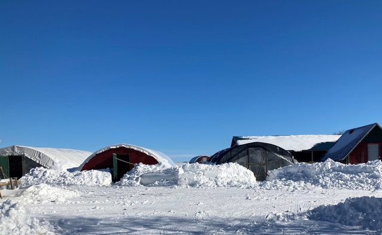

By Elizabeth Dunlop Richter
In the dead of winter, outdoor farmer’s markets are closed, and we look to online services to find farm-fresh produce and meats. Actually visiting a farm seems a distant dream; many of us depart for warmer climes. Farmers, however, are still on call and must persevere. There may be root vegetables to harvest, hoop-frame greens to pick, eggs to collect, and livestock to feed. On top of the recent arctic blast and many feet of snow, farmers have also been dealing with the impact of Covid-19 and its decimation of traditional sales outlets like restaurants and farmers markets. One such farmer is David Cleverdon, whose farm, contrary to what one might imagine, is not just surviving but thriving in the face of the pandemic.

A snowy February day on Kinnikinnick Farm
For David and his wife Susan, farming was not part of their career plan. Living in Chicago, David was involved in Illinois politics and a trader; Susan worked in marketing. They had a small organic backyard vegetable garden at their weekend home in Sharon, Wisconsin. The garden grew bigger and bigger, became part of their household economy, and as David says, “it just got out of hand. That’s when I decided that we didn’t need a garden, we needed a farm.” That was in 1987. They bought some acreage with an abandoned farmstead in Caledonia, IL near Rockford, about an hour and a half from Chicago, and named it Kinnikinnick Farm after the creek that runs along with the property. They spent weekends for the next five years clearing out the farm and its adjacent buildings and creating a place to live. They left their city life. Susan went to work as the Major Gift Officer at nearby Beloit College; David retired from the Board of Trade and became a full-time organic produce farmer.
David and Susan Cleverdon
“Our first year was a disaster,” David recalls, “We learned that growing vegetables commercially was not the same as backyard gardening.” There were myriad problems. “Basically we didn’t know what to plant, when to plant it, or even how much to plant.” But being smart, resourceful people, David and Susan learned through that first year’s experience. “It taught us that we needed to work deliberately and smartly and to develop systems, procedures, protocols, and calendars.”
Kinnikinnick Farm, Caledonia, Illinois
They built a successful business; their initial customers were restaurants and farmers markets, first in Rockford and Skokie. David discovered that the best way to find restaurant customers was to go to farmer’s markets near restaurants where the chefs who shopped there could discover them. Kinnikinnick Farm is now a regular at Chicago’s Green City Market and the Evanston Farmers’ Market.
The Cleverdons’ restaurant customer base grew from 10 to 50 by 2009. Restaurants require volume and as their restaurant base grew, they cut back on the variety of what they grew. “We wanted to grow what was unique, extremely flavorful, drop-dead beautiful, and nutritious,” said David. A turning point came in 2009-10 when a tomato blight wiped out 6000 tomato plants. “We realized that even though we were growing a bunch of varieties, we were not diversified.”
David had been contemplating adding chickens and, inspired by an intern who promised to return if the farm-raised poultry, decided to try it on a small scale. Today the farm raises 2000 broiler chickens a year and has a flock of 300 laying hens. Customers love their pale green, blue, beige, brown, and white eggs with high, bright yellow yokes, evidence of freshness and cage-free living.
David’s business model led them to add other livestock, including bees for honey, Berkshire pigs, and goats. He has also recently incorporated grass-fed and finished ground beef into their product offering, processed from steers raised on the grass on a neighboring farm.
This winter’s activities on Kinnikinnick Farm are not limited to caring for the animals. They have guests for whom to prepare as well. As the farm moved from a focus on vegetables to a focus on livestock, a Dutch businessman who had set up “farm stay” programs in Holland to help farmers diversify their income approached David about beginning a similar program in the U.S. David bought into the idea and as he tells it, five weeks later, two semi-trucks appeared in the driveway with the contents of five unique, rustic canvas lodges. “We start our Farm Stay business!”
John and Basak Notz are delighted with that decision. Through John’s father, John Notz, who knew Susan Cleverdon through his board position at Beloit College, John and his wife Basak began taking their children to Kinnikinnick Farm and have returned for many years. Basak recounts, “Farmer Dave comes with a truck and takes them to feed chickens, gather eggs, feed the pigs, milk the goats. The Cleverdons have a great personal touch; they are really warm and thoughtful people.” The Notz family and their friends now rent all five cabins for a memorable farm weekend.
David and guests explore the farm
David’s income diversification has paid off during Covid-19. In addition to his Farm Stay program, which offers social distancing as well as revenue enhancement, he had already pivoted away from restaurant sales. Two years ago, he realized that restaurants were no longer a core business for the farm and he stopped selling in that market. By cutting back on growing vegetables, which are labor-intensive, he was saving on payroll. When the pandemic hit, he did not have any restaurant business to lose. He did have to compensate for sales at farmer’s markets, which were either closed or reduced in size and customer accommodation. He had already built a website where he took Farm Stay reservations, so it was a matter of quickly climbing an e-commerce learning curve to selling other products online.
Tapping into his regular customer base, David now takes orders online and makes weekly Saturday deliveries to four drop-off locations, one in Chicago, one in Evanston, and two in the western suburbs. I look forward to driving to the House of Glunz wine shop on Wells and there, parked in front, is the Kinnikinnick Farm’s yellow truck. I might pick up a chicken, a dozen eggs, bacon, sausage, or perhaps whole grain bread baked by a young, artisan baker in Rockford who uses flour from the heirloom grains that David sells. Among the regular customers is author, art historian, and curator Anne Rorimer, seen here picking up her order.
David reports “since the pandemic forced us into doing this, we’re grossing more per week than we ever did. We’re now offering products from neighbors like bread, soap, heirloom grains, and granola. Our basic thrust is to disintermediate the business and go straight to the customer. Farmers like us have to learn marketing skills. We need to be in control of our own branding.”
David will soon turn 80, but he has no intention of retiring. “It’s a great way to grow old. I’m outside every day; it’s a way of being active and mentally engaged. Every day is new and exciting…I wouldn’t trade it, why would we want to do anything else?” His customers would certainly agree.